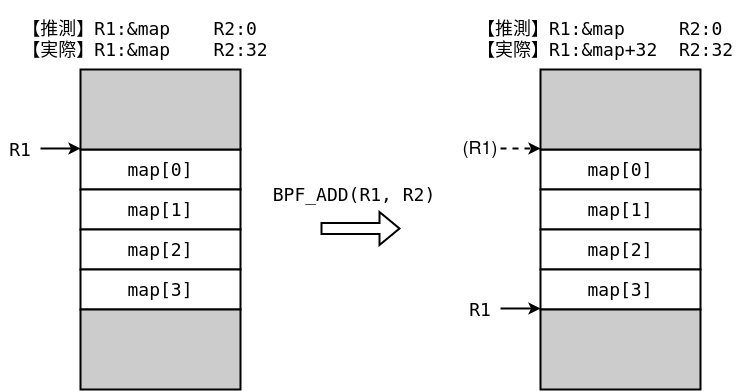

In the previous chapter, we learned about eBPF. This chapter explains the verifier and JIT compiler, which allow user-supplied BPF programs to run safely and quickly.
Verifier
First, let us look at the eBPF verifier. Its source code is in the Linux kernel's kernel/bpf/verifier.c.
The verifier checks each instruction and follows every branch to an exit instruction. Verification can be broadly divided into two stages: the first pass and the second pass.
The first check uses depth-first search to ensure that the program is a directed acyclic graph (DAG). A DAG is a directed graph without loops.
This check rejects programs such as:
BPF_MAXINSNSIf there are instructions exceeding[1]- If loop flow exists
- If an unreachable instruction exists
- If there is an out-of-range or illegal jump
In the second stage of checking, all paths are searched again. At this time, we track the type and range of the register value.
This check will reject programs such as:
- Using uninitialized registers
- Returning a pointer to kernel space
- Write kernel space pointer to BPF map
- Invalid pointer read/write
First step check
The DAG check is implemented by the check_cfg function. The algorithm is a depth-first search without recursive calls.
check_cfg starts at the beginning of the program and examines the instructions using depth-first search. For the instruction currently being examined, it calls visit_insn, which pushes a branch destination onto the stack. The search stack is managed by push_insn, which also detects out-of-range jumps and cycles.
1 | if (w < 0 || w >= env->prog->len) { |
In addition,visit_insn always pushes only one pass at a time. (or DONE_EXPLORING indicates that all branch destinations for that instruction have been searched. )for example BPF_JEQ If there is a conditional branch like visit_insn pushes only the first branch destination. Since it is a depth-first search, once all branch destinations have been searched,BPF_JEQ I'll be back. Then BPF_JEQ again against visit_insn is called, and this time the other branch destination is pushed. Furthermore, when the search is completed,BPF_JEQ 3rd time against visit_insn was called and there DONE_EXPLORING is returned,BPF_JEQ is popped from the stack.

At first glance, it may seem inefficient, such as not pushing both paths at once in a conditional branch or not popping an instruction when fetching it, but it is a device that outputs a clean stack trace when an abnormality is detected.
For example, the following programs will all be rejected by the first stage checking mechanism:
1 | // Some instructions are unreachable |
1 | // there is a jump out of bounds |
1 | // there is a loop |
Even if there are jumps in the negative direction, there is no problem as long as there are no loops.
1 | struct bpf_insn insns[] = { |
Second stage check
The most important eBPF verifier bugs occur in the second-stage check.
This stage is mainly implemented by do_check and tracks register types, value ranges, precise values, and offsets.
type tracking
The verifier records the kind of value held by each register in a bpf_reg_state structure. For example, consider the following instructions:
1 | BPF_MOV64_REG(BPF_REG_0, BPF_REG_10) |
The first instruction assigns the stack pointer to R0, so R0 has type PTR_TO_STACK. The next instruction subtracts 8 from R0, but it still points inside the stack and therefore retains that type. The type can change according to the instruction, register type, and value range; for example, pointer arithmetic is handled differently from scalar arithmetic.
Type tracking is essential for detecting malicious programs. If a scalar value could be used as a pointer for arbitrary loads and stores, the program could read and write arbitrary addresses. Likewise, passing a freely manipulated pointer such as a BPF-map pointer to a helper that expects a context could provide a fake context.
Register types are represented by enum bpf_reg_type; examples include the following:
| mold | meaning |
|---|---|
NOT_INIT |
Uninitialized |
SCALAR_VALUE |
Common values such as constants |
PTR_TO_CTX |
Pointer to context (BPF program call argument) |
CONST_PTR_TO_MAP |
Pointer to BPF map |
PTR_TO_MAP_VALUE |
Pointer to the value of the BPF map |
PTR_TO_MAP_KEY |
Pointer to key in BPF map |
PTR_TO_STACK |
Pointer to BPF stack |
PTR_TO_MEM |
pointer to a valid memory area |
PTR_TO_FUNC |
Pointer to BPF function |
The initial register state is defined by the init_reg_state function.
Constant tracking
The verifier tracks register constants using an interval abstraction. For each register, it records the minimum and maximum values that the register may contain at that point.
For example, if R0 may be [10, 20] and R1 may be [-2, 2] when executing R0 += R1 (BPF_ADD), abstract interpretation gives R0 the range [8, 22] afterward.
This operation handling is implemented by the adjust_reg_min_max_vals and adjust_scalar_min_max_vals functions.
In the analysis process, when specific values are not known, values are often estimated in an abstract range. If you don't abstract in a sound way, your interpretation may be wrong.
To track the range of values, the verifier maintains and tracks the following values for each register.
| variable | meaning |
|---|---|
umin_value, umax_value |
Minimum and maximum values when interpreted as 64-bit unsigned integers |
smin_value, smax_value |
Minimum and maximum values when interpreted as 64-bit signed integers |
u32_min_value, u32_max_value |
Minimum and maximum values when interpreted as 32-bit unsigned integers |
s32_min_value, s32_max_value |
Minimum and maximum values when interpreted as 32-bit signed integers |
var_off |
Information about each bit in the register (bits whose specific values are known) |
var_off is a tnum structure containing mask and value. A 1 in mask marks a bit whose value is unknown, while value stores the known bits.
For example, a 64-bit value read from a BPF map initially has every bit unknown, so its var_off is:
1 | (mask=0xffffffffffffffff; value=0x0) |
It will be. If you AND this register with 0xffff0000, you can see that the part ANDed with 0 becomes 0, so
1 | (mask=0xffff0000; value=0x0) |
It will be. If we further add 0x12345, we can find the lower 16 bits.
1 | (mask=0x1ffff0000; value=0x2345) |
It becomes. Considering the possibility of rollover mask Note that the bit has been increased by one. At this point umin_value, umax_value, u32_min_value, u32_max_value are 0x1ffff0000, 0x1ffff2345, 0xffff0000, 0xffff2345 respectively.
Now, let's take a look at the specific implementation.BPF_ADD, the registers are updated as follows:
1 | case BPF_ADD: |
scalar_min_max_add, a range calculation that takes into account integer overflow is implemented as shown below.
1 | static void scalar_min_max_add(struct bpf_reg_state *dst_reg, |
This update logic is implemented for all operations, including multiplication, division, and logical and arithmetic shifts. The calculated range is used to check whether an offset is valid when accessing memory such as the stack or context.
For example, stack bounds are checked by check_stack_access_within_bounds. If the value is known to be a constant, such as an immediate value, a normal offset check is performed.
1 | if (tnum_is_const(reg->var_off)) { |
On the other hand, if you do not know the specific value, check the minimum and maximum values that the offset can take.
1 | } else { |
And then I'm using those values to do a range check.
1 | err = check_stack_slot_within_bounds(min_off, state, type); |
In this way, the method of tracking the value range of registers and variables is frequently used in JIT, which requires optimization and speedup, in addition to BPF.

In order to improve execution speed, security checks are completed as much as possible in advance.
All of the following programs will be rejected by the second stage checking mechanism:
1 | //Using uninitialized registers |
1 | // Kernel space pointer leak |
Consider an example where an abstracted value does not become a constant.
1 | int mapfd = map_create(0x10, 1); |
First, create a BPF map whose values are 0x10 bytes long. The first block loads the first map value into R6 and its pointer into R7. The return value of map_lookup_elem is in R0; because it may be NULL, a conditional branch removes that case.
The final block adds R6 to R7. Since R6 came from the map, it could have any value, but BPF_AND with 0b0111 limits it to [0, 7]. Because the map value is 0x10 bytes, reading 8 bytes at an offset of at most 7 with BPF_LDX_MEM(BPF_DW) is valid, so the verifier accepts this program.
If the mask is changed to 0b1111, the possible offset reaches 15 and the verifier rejects the program.
1 | ... |
This is because the value size is 16, but the maximum offset is 15, and you are trying to get 8 bytes from it, resulting in an out-of-range reference.
Also, some instructions do not support value tracking. for example BPF_NEG is always unbound, so the following program will be rejected by the verifier (although there is no problem in reality).
1 | BPF_ALU64_IMM(BPF_AND, BPF_REG_6, 0b0111), // R6 &= 0b0111 |
Thus, the second stage of checking follows the registers to ensure that undefined behavior does not occur when accessing memory or using registers. Conversely, thisIf the check is incorrect, an out-of-bounds reference may occur during memory access.That's why. The specific method will be explained in the next chapter.
ALU sanitation
The type checking and range tracking described above are the work of the verifier, but due to the increase in attacks that abuse eBPF, a new mitigation mechanism called ALU sanitation has been introduced in recent years.
The reason why attacks occur due to errors in the verifier is that out-of-bounds references can occur. For example, as shown in the image below, suppose you have a "corrupt" register that the verifier predicts is 0, but the actual value is 32. The attacker adds the corrupted value to the pointer of the map, which has four values of size 8, as shown. The verifier thinks the value is 0, so it thinks it's still pointing to the beginning of the map after the addition, but it's actually pointing out of range. If you load a value from R1 in this state, you can make an out-of-range reference without being detected by the verifier.

To mitigate out-of-bounds references caused by verifier bugs, Linux introduced a mechanism called ALU sanitation in 2019.[2]
eBPF only allows operations on pointers such as adding and subtracting scalar values. In ALU sanitation, when adding or subtracting a pointer and a scalar value, when the scalar value side is known to be a constant, it is used as a constant operation.BPF_ALUxx_IMM Rewrite it to . For example, suppose R1 is a pointer to a map and R2 is a register with a scalar value of guessed value 0 and actual value 1. At this time
1 | BPF_ALU64_REG(BPF_ADD, BPF_REG_1, BPF_REG_2) |
is because the verifier thinks R2 is a constant 0,
1 | BPF_ALU64_IMM(BPF_ADD, BPF_REG_1, 0) |
towill be changed. This patch was originally introduced to prevent a side-channel attack called Specter, but it is also effective against attacks that exploit bugs in the verifier.
If the scalar side is not constant, the instruction is patched using alu_limit.
alu_limit is the maximum value that may be added to or subtracted from the pointer. For example, if a pointer refers to the second byte of a 0x10-byte map value, alu_limit is 0xe for a BPF_ADD with a scalar. As before, the original instruction is:
1 | BPF_ALU64_REG(BPF_ADD, BPF_REG_1, BPF_REG2) |
Consider the following instruction. With ALU sanitation, it is patched before execution. (BPF_REG_AX is an auxiliary register.)
1 | BPF_MOV32_IMM(BPF_REG_AX, aux->alu_limit), |
As before, consider adding a scalar value R2 to register R1 pointing to the second byte from the beginning of a map element of size 0x10. The scalar value R2 is alu_limit Suppose that the verifier is not able to detect it due to some bug even though it exceeds 0xe. For example, the following instruction sequence is generated.
1 | BPF_MOV32_IMM(BPF_REG_AX, 0xe), |
First, the first two instructions calculate 0xe-R2. If R2 is within the range, it will be positive or zero; if it is outside the range, it will be negative. In the following OR instruction, the most significant bit is 1 if AX and R2 have different signs. In other words, when an out-of-bounds reference occurs, the most significant bit should be 1 at this point.
Then, use NEG to invert the sign and use arithmetic shift to shift by 64 bits. If an out-of-range reference occurs, AX will contain 0, otherwise AX will contain 0xffffffffffffffff. Finally, R2 and AX are ANDed together and this is the final offset used.
By doing this, in the unlikely event that an out-of-bounds reference occurs, 0 will be added to the pointer.
Possibility of each operation
A rough summary of the processes prohibited by the second-stage check is as follows.
- register
- Writing to R10(FP)
- Loading uninitialized registers
- context
- Read and write out of context
- The
check_ctx_accessescode does not allow reading from or writing to the context.
- BPF map
- Reading and writing data out of bounds
- Writing a pointer
- stack
- Reading and writing out of bounds on the stack
- Loading uninitialized space
- 8-byte (4-byte for 32-bit) unaligned read/write
- The lower 32 bits of the pointer (
BPF_W) etc. Partial reading and writing
- General memory
- Reading and writing pointers that may have NULL pointers
- function
- Passing an argument with a type/value different from the definition
When you write a value to a map, the tracking range you write to disappears. On the other hand, pointers can be written to the stack, and it remembers the range and type of the written value. The trade-off is that the stack has a size limit of 512 bytes and cannot write to unaligned offsets or read or write from user space.
JIT (Just-In-Time compiler)
Assuming the verifier is correct, a BPF program that passes it is safe to run with any input. The JIT compiler can therefore translate its instructions directly into machine code for the target CPU.
Because machine code differs by CPU architecture, JIT implementations live under the arch directory. For x86-64, the implementation is in arch/x86/net/bpf_jit_comp.c, in the do_jit function.
For example, multiplication (BPF_MUL) is translated as follows.
1 | case BPF_ALU | BPF_MUL | BPF_X: |
0x0F, 0xAF but imul This is the instruction code corresponding to the instruction.
Even if the verifier is correct, if the code generated by the JIT behaves differently than the verifier, it is likely to be exploitable.
Up to this point, we have roughly explained the internal mechanism of eBPF required for exploitation. In the next chapter, we will actually take advantage of a bug in the verifier to escalate privileges.
(1) Comparison of pointers
(2) Subtraction of pointers and pointers
(3) Writing pointer value to stack
(4) Writing pointer value to BPF map
(5) Reading and writing stack addresses that are within range but not aligned
There are other checks for the number of instructions.
check_cfgPreviously checked.↩︎ALU sanitation itself had an implementation bug, which was fixed in 2021.↩︎